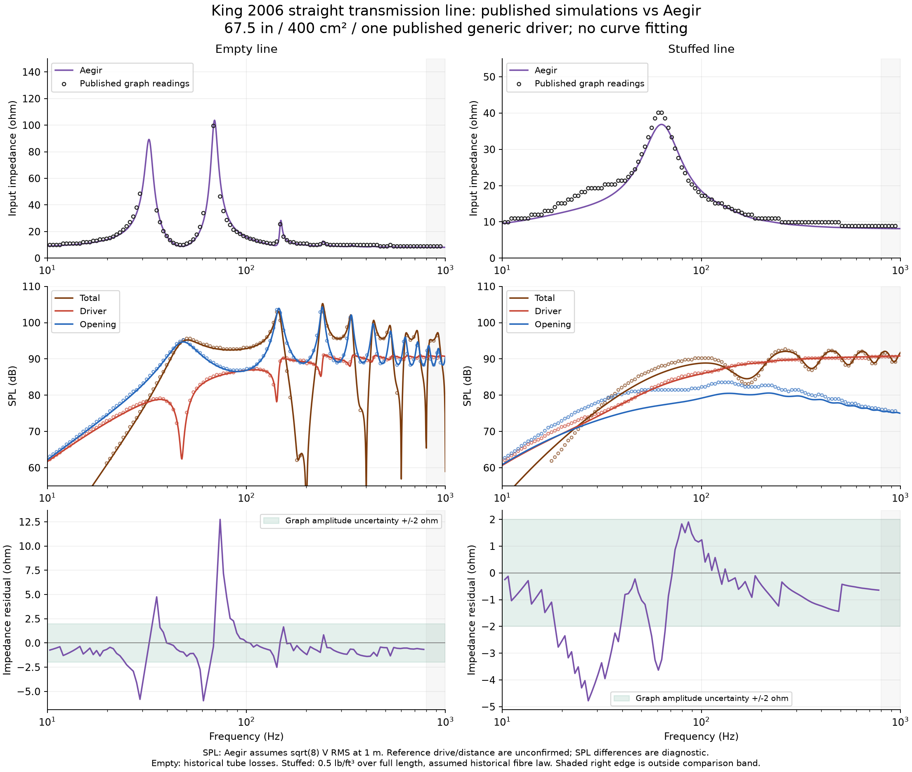
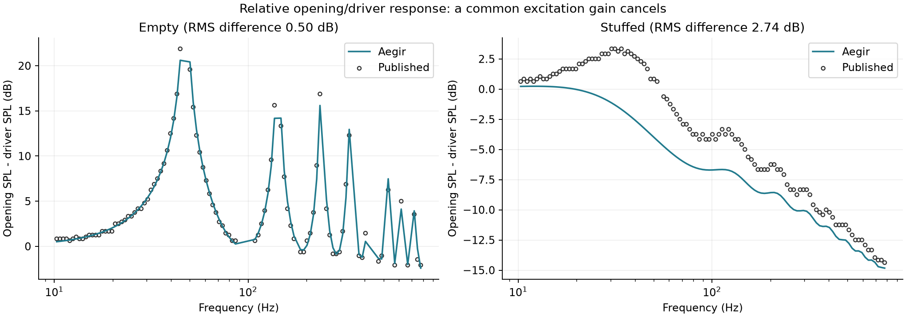
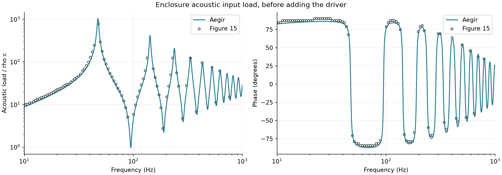
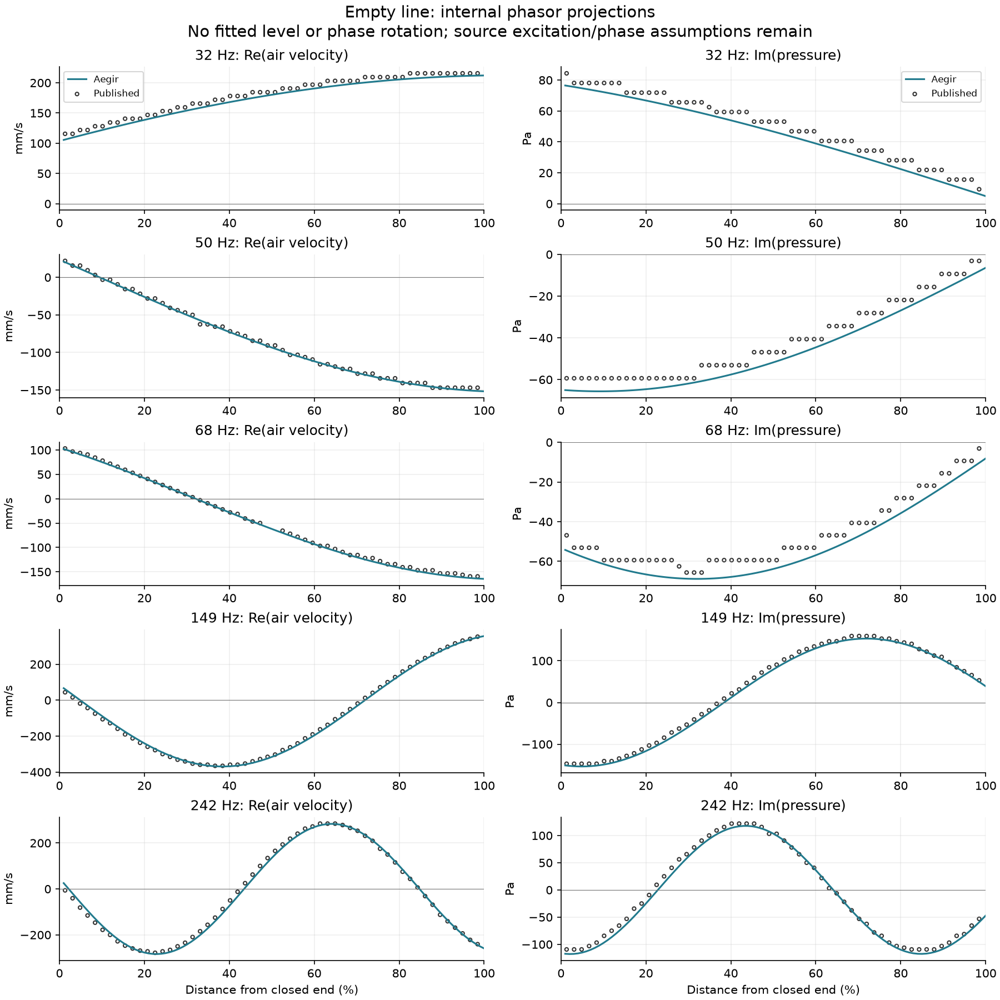
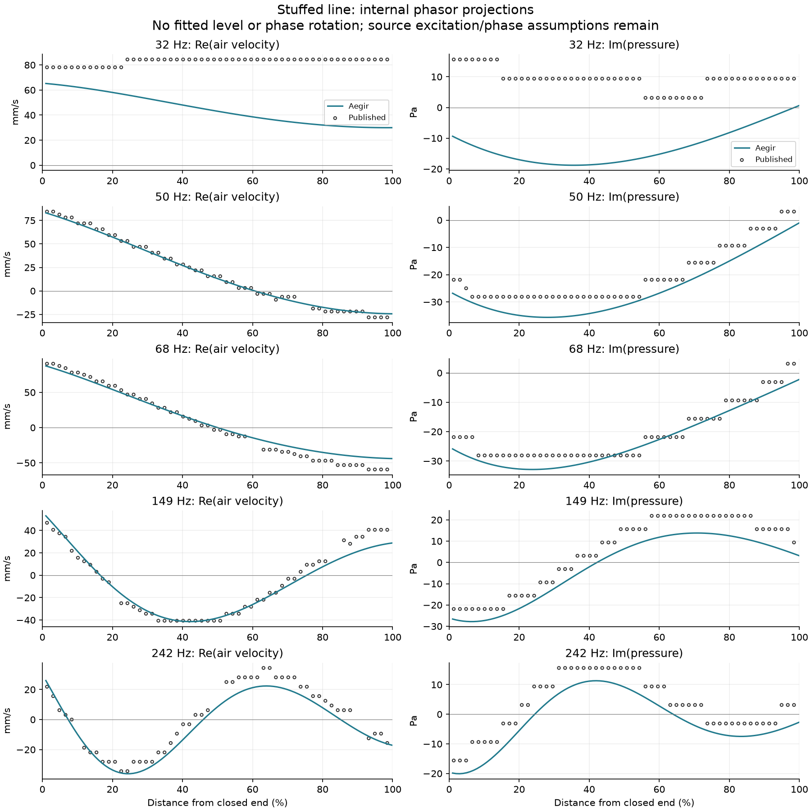

2026-11-03 | Aegir 0.9.3 | Source-specific developer validation
One driver, straight transmission line: an independent published reference
Source: Martin J. King, Anatomy of a Transmission Line Loudspeaker, revised 18 October 2006. Figures 18/19 and 21/22, PDF pages 27/29–30 and 32–34. The driver is the author's generic simulation driver, not a manufacturer product. The acoustic line is 67.5 in long with 400 cm² constant area.
This is agreement with published simulations, not physical validation. The model inputs were selected before comparison and have not been fitted. The original Satori project is preserved in an export, snapshot and workspace/history backup.
What agrees
The empty-line impedance peak frequencies agree within 1.74% of the paper's rounded frequencies. Complex pressure changes by about 2.14e-13 in relative L2 when the integration step is halved from 10 to 5 mm. Two live-app response jobs reproduce the local benchmark across 2,008 frequency points to about 3.9e-10 in absolute impedance/SPL units.
| Published peak (Hz) | Aegir peak (Hz) | Difference |
|---|
| 32 | 32.359 | +1.12% |
| 68 | 69.183 | +1.74% |
| 149 | 149.279 | +0.19% |
| 242 | 242.103 | +0.04% |
Curve differences, 10–800 Hz
RMS and maximum errors are computed on retained source graph readings. SPL units are dB; impedance units are ohm. The raster's low-level clipping and steep/ambiguous columns are excluded, so these are not errors over every original frequency. No frequency or level shift was applied.
What needs attention
The historical filling law underpredicts the opening response by about 2.8 dB on average over the retained points, with 3.2 dB RMS discrepancy and a 5.4 dB maximum. The stuffed impedance curve also differs. The document does not expose the complete 2006 filling implementation, so this is a limitation of the current reproduction, not proof of a particular coding error. Empty-line local impedance residuals reach 12.8 ohm on a steep resonance flank despite close peak frequencies; both amplitude and frequency-reading uncertainty matter.
- Reference excitation voltage and far-field distance are not explicitly exposed in the PDF; absolute SPL differences are diagnostic, not acceptance. No level or frequency offset fitted.
- Source text says c343m/s, but printed driver derivation is more consistent with c342m/s; both retained without selecting by agreement.
- 18mm stock and schematic mechanical driver dimensions are implementation assumptions; source gives an ideal constant-area line. No fabrication or headroom claim.
- Historical2003 empty/fibre law transferred to2006 as an assumption.
- Source labels its directly-derived mass Mmd; Aegir derives Mms then removes two free-air piston loads. These conventions may differ.
- The 2006 reference is a published generic-driver simulation, not a built measured loudspeaker.
The opening-to-driver level ratio removes a common drive/distance gain. Its RMS difference is 0.50 dB empty and 2.74 dB stuffed, under the paired plots’ common far-field convention. This supports a filling/termination discrepancy independently of an arbitrary global SPL offset.
Overlay plots
Lines: Aegir. Open markers: independently extracted source raster curves. Pressure/velocity phasor projections are diagnostics under assumed sinusoidal excitation; no phase or amplitude alignment has been fitted.

Native frequency model vs published plots
Opening-to-driver level ratio: common excitation/distance convention assumed, no gain fitting
Enclosure input load before coupling the driver
Empty internal pressure and velocity projections
Stuffed internal pressure and velocity projectionsIndependent 3D field spot check at 100 Hz
All three native WebGPU runs settled, and input impedance changes by less than 0.5% between successive grids. However, the voxel air volume is non-monotonic, with deviations up to 9% from the 68.58 L CAD cavity. This does not pass geometry convergence. It is a finite-cabinet/exterior calculation, unlike the paper’s ideal infinite-baffle frequency model; one tone cannot establish broadband agreement.
| Grid (mm) | Cells | Voxel volume (L) | Volume error | Input impedance (ohm) | Window drift |
|---|
| 20 | 95400 | 68.800 | 0.32% | 15.933 | 0.0016% |
| 16 | 190608 | 74.760 | 9.01% | 15.870 | 0.0027% |
| 12 | 440000 | 63.259 | 7.76% | 15.931 | 0.0012% |
Native 1D impedance at100 Hz: 15.840 ohm. The similar single-tone impedance does not override the geometry discrepancy. Full phasor fits, timings, warnings and archive hashes.
Native app runs
| Case | Job ID | Project revision | Status | Frequency points |
|---|
| empty | 9b42d8bd-2d3d-4d09-a7c7-1400c3327ad3 | 14 | completed | 1004 |
| stuffed | 617a9a39-8b0c-4074-b229-ba2c8f38fadd | 15 | completed | 1004 |
Artifacts and reproduction
Full comparison JSON · Empty prediction CSV · Stuffed prediction CSV · Empty residuals · Stuffed residuals
Reproduce with .venv/Scripts/python.exe scripts/extract-anatomy-traces.py, node scripts/anatomy-benchmark.mjs, then .venv/Scripts/python.exe scripts/render-anatomy-report.py. Live jobs and archive hashes are retained separately.
Source SHA256: 0ce9341e6f44ea538f432ffc40cc2a148f97bcd270bb8a9d7644644bd1b0a510. Graph uncertainty: ±1 dB or ±2 ohm and ±2% frequency; profile reading uncertainty ±10 Pa or ±0.010 m/s and ±1% line position. Source images are 601×770 and 553×246 pixels.